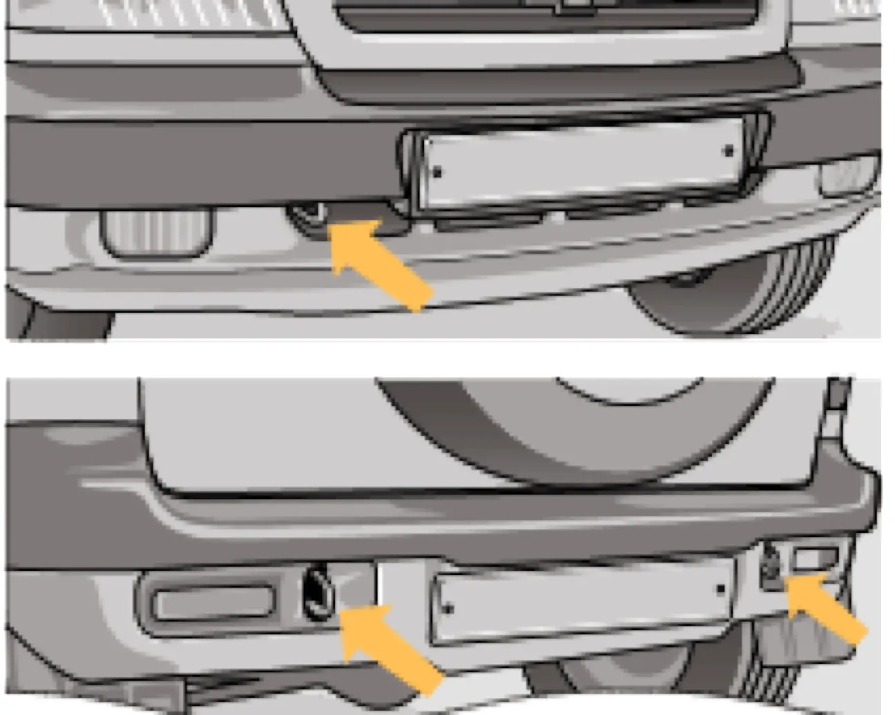

ЭКСПЛУАТАЦИЯ АВТОМОБИЛЯ
Буксирование автомобиля
буксировкатроспроушинывакуумный усилительгидроусилитель
Для буксирования Вашего автомобиля закрепляйте трос только в предназначенных для этой цели передних или задних проушинах.

Перед буксированием установите ключ в выключателе зажигания в положение I и включите световую сигнализацию, согласно Правилам дорожного движения. При буксировании следите за тем, чтобы буксирный трос был постоянно натянут.
Предупреждение / внимание:
Вакуумный усилитель тормозов выполняет свою функцию только при работающем двигателе. Поэтому при буксировании автомобиля с неработающим двигателем при торможении следует значительно сильнее нажимать на педаль тормоза.
Вакуумный усилитель тормозов выполняет свою функцию только при работающем двигателе. Поэтому при буксировании автомобиля с неработающим двигателем при торможении следует значительно сильнее нажимать на педаль тормоза.
Буксирование автомобиля проводите плавно, без рывков и резких поворотов.